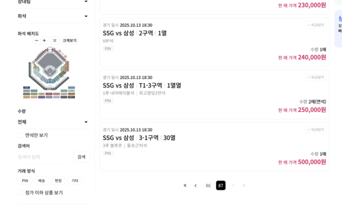
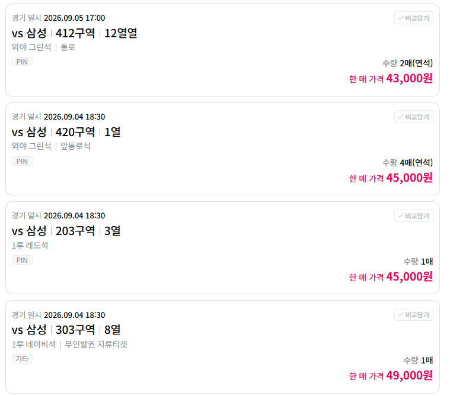
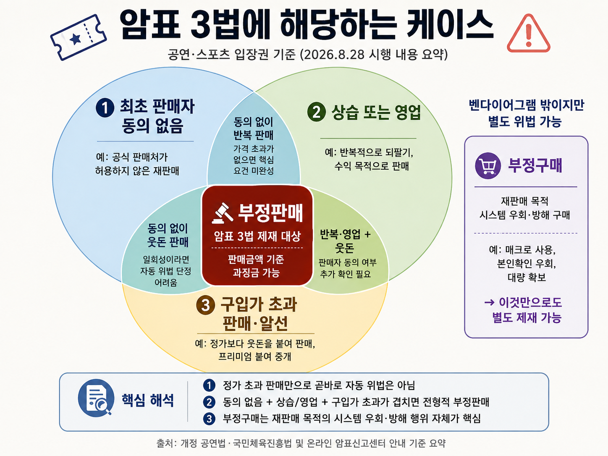
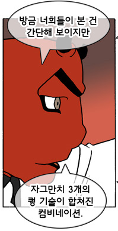
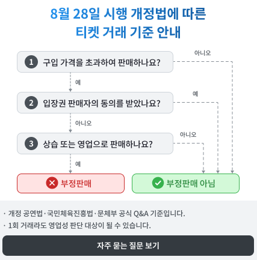
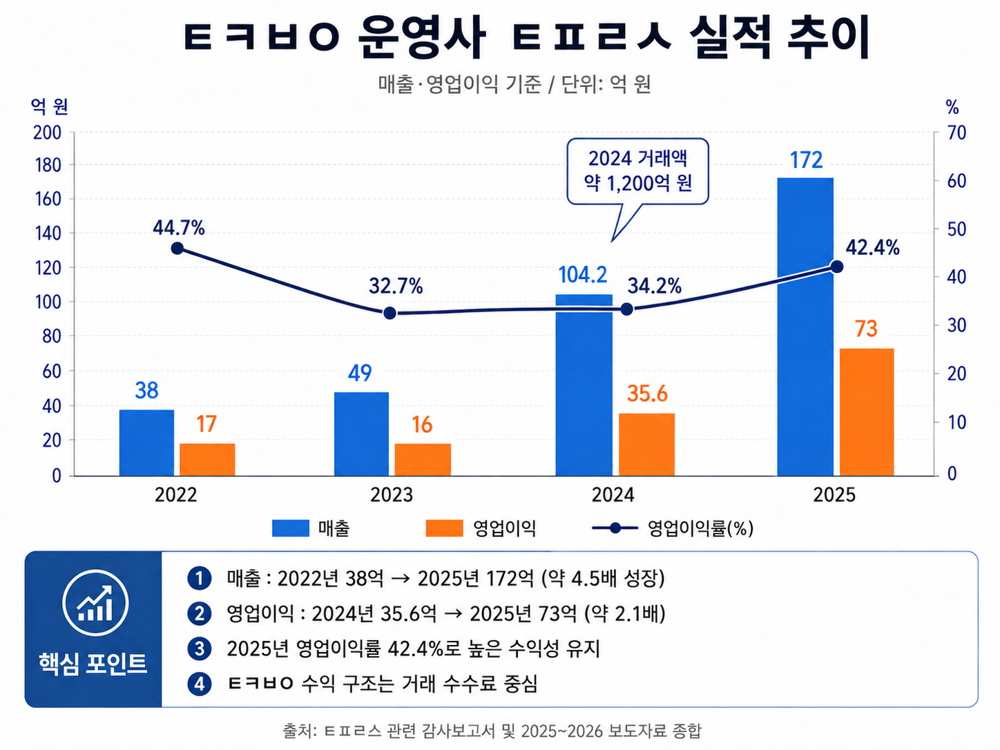

공연, 스포츠 등 각종 문화생활에서의 암표 문제를 해결하기 위해 ‘암표와의 전쟁’을 선언하고 8월 28일 시행된 암표 3법

[25년 플레이오프 당시 17,000원 좌석을 30배 가격인 500,000원에 판매하고 있는 모습]
이 시행령을 근거로 정가의 몇배~몇십배 씩 받던 암표가 줄어들 것을 기대하는 사람이 많았는데..
시행 후 5일이 지난 시점 암표 이슈는 과연 나아졌을까?
1천만 관중이 즐기는 문화생활인 야구(KBO)를 통해 알아보자
본인들은 절대 암표 플랫폼이 아니라고 하는 티켓 리셀 플랫폼 'ㅌㅋㅂㅇ'를 시행령 이후 들어가보았다

?????
외야 그린석 1매 기준 10,000원인 티켓을 45,000원에 버젓이 팔고 있는 상태
암표 3법 시행 이전과 달라진 것이 전혀 없는 모습
어떻게 이런 일이 일어난 걸까?
그건 바로 국민들이 암표상을 때려잡을 것이라 생각했던 암표 3법을 회피할 수 있는 방법을 처음부터 친절하게 마련해주었기 때문이다.
이를 근거로 암표상들은 합법적으로 티켓을 정가 대비 몇배 이상 가격으로 판매하여 차익을 얻으며 8월 28일 전과 마찬가지로 호의호식을 누리고 있다.
📢암표 3법을 다시 한번 알아보자
암표 3법에 저촉되어 처벌을 받기 위해서는
① 최초 판매자의 동의를 받지 않고,
② 상습 또는 영업으로,
③ 자신이 구입한 가격을 초과해 판매하거나 알선해야 함.
즉 세 요건이 결합되어야 처벌의 대상으로 규정
(법제처 조문 링크 : https://law.go.kr/LSW/lsLinkCommonInfo.do?chrClsCd=010202&lsJoLnkSeq=1025609297)

모두가 기대했던 건 정가로 취득한 티켓을 정가 이상으로 판매하는 행위에 대한 일률적 처벌이였겠지만

실상은 두개도 아니라 무려 세개의 조건을 충족해야 위법이기 때문에, 여전히 암표상에게 몇배씩 돈을 갖다바쳐야만 문화생활을 즐길 수 있다.
암표 3법이 시행되면 망할거라던 그 플랫폼은?

사이트 진입하자마자 친절하게 부정판매가 아닌 케이스를 팝업으로 안내 중
그래도 걱정하는 고객(암표상)들을 위해 친절하게 공지까지 게재해놓음
① 이용이나 티켓 재판매 자체가 금지되는 것은 아닙니다.
법 시행 이후에도 플랫폼은 정상적으로 운영되며, 개인 간 티켓 거래 자체가 금지되는 것은 아닙니다.
② 구입가격보다 비싸게 판매했다고 곧바로 ‘부정판매’가 되는 것은 아닙니다.
개정법상 부정판매에 해당하려면 ‘상습 또는 영업으로’ 판매∙알선하는 등의 법적 요건을 충족해야 합니다.- 부정판매 = 최초판매자(예매처,발행자) 동의를 받지 아니한 자가 + 상습 또는 영업으로 + 자신이 구입한 가격을 초과한 금액으로 입장권 등을 판매하거나 알선하는 행위
- 과징금 = 부정판매로 판단된 경우, 판매금액과 판매매수 등 시행령에서 정한 기준에 따라 산정
현재 ‘상습’과 ‘영업’에 대한 구체적인 판단기준은 명확하게 제시되지 않은 상태이며, 향후 관계 기관의 구체적인 기준이나 해석이 확인되는 대로 다시 안내드리겠습니다.
③ 신고됐다는 이유만으로 거래자료가 곧바로 제공되는 것은 아닙니다.
자료제출은 관계 법령에서 정한 요건과 절차에 따라 이루어집니다.
구체적인 사실관계와 요청의 적법성 등을 확인하고, 관계기관의 적법한 자료제출 요청이 있는 경우 관련 법령에서 정한 범위 내에서 필요한 자료를 제출합니다.
이를 요약하자면?
"너가 누군가로부터 너가 전문적이고 상습적으로 암표를 판매하는 암표상이라고 관계 기관에게 신고를 당했을 때만
우리가 해당 기관에 협조할게~ 그러니까 마음 놓고 티켓 리셀하렴^^ 혹시 모르니 조심 좀 하고ㅎㅎ"
결국 모두가 기대했던 암표 3법으로 인한 암표 근절은 이루어지지 않았고 그 사이에 ㅌㅋㅂㅇ는 올해도 최고 실적을 달성할 예정

이럴꺼면 법 왜 만듦?
팩트는 암표상이 건강해졌다는거임ㅋㅋㅋㅋㅋ
돈 많이 벌어서 건강해졌다고ㅋㅋ